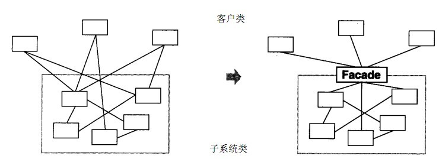
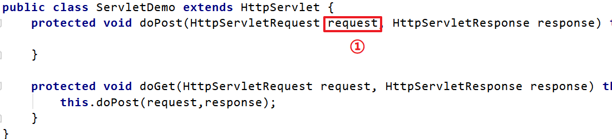
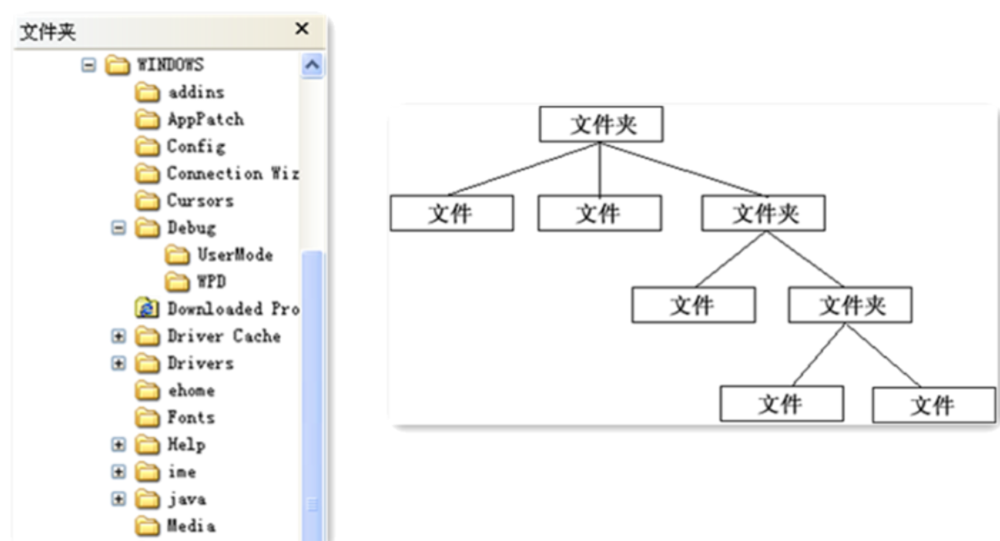
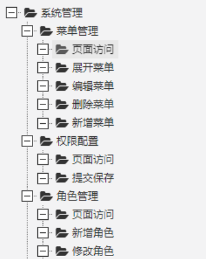
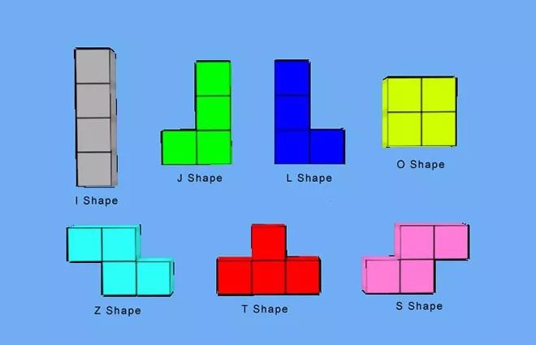
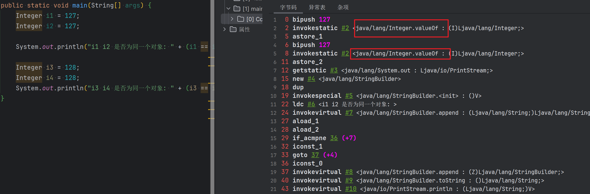

链接:
结构型模式Ⅰ
结构型模式 Ⅱ
5-外观模式
概述
有些人可能炒过股票，但其实大部分人都不太懂，这种没有足够了解证券知识的情况下做股票是很容易亏钱的，刚开始炒股肯定都会想，如果有个懂行的帮帮手就好，其实基金就是个好帮手，支付宝里就有许多的基金，它将投资者分散的资金集中起来，交由专业的经理人进行管理，投资于股票、债券、外汇等领域，而基金投资的收益归持有者所有，管理机构收取一定比例的托管管理费用。
定义：
又名门面模式，是一种通过为多个复杂的子系统提供一个一致的接口，而使这些子系统更加容易被访问的模式。该模式对外有一个统一接口，外部应用程序不用关心内部子系统的具体的细节，这样会大大降低应用程序的复杂度，提高了程序的可维护性。
外观（Facade）模式是“迪米特法则”的典型应用

结构
外观（Facade）模式包含以下主要角色：
- 外观（Facade）角色：为多个子系统对外提供一个共同的接口。
- 子系统（Sub System）角色：实现系统的部分功能，客户可以通过外观角色访问它。
案例
【例】智能家电控制
小明的爷爷已经 60 岁了，一个人在家生活：每次都需要打开灯、打开电视、打开空调；睡觉时关闭灯、关闭电视、关闭空调；操作起来都比较麻烦。所以小明给爷爷买了智能音箱，可以通过语音直接控制这些智能家电的开启和关闭。类图如下：
classDiagram
class SmartAppliancesFacade {
- light : Light
- tv : TV
- airCondition : AirCondition
+ SmartAppliancesFacade()
+ say(String message) void
- on() void
- off() void
}
class Light {
- on() void
- off() void
}
class TV {
- on() void
- off() void
}
class AirCondition {
- on() void
- off() void
}
class Client {
+ main() void
}
SmartAppliancesFacade o-- Light
SmartAppliancesFacade o-- TV
SmartAppliancesFacade o-- AirCondition
SmartAppliancesFacade <.. Client
Code:
//空调
public class AirCondition {
//打开功能
public void on() {
System.out.println("打开空调...");
}
//关闭功能
public void off() {
System.out.println("关闭空调...");
}
}
//电灯
public class Light {
//打开功能
public void on() {
System.out.println("打开电灯...");
}
//关闭功能
public void off() {
System.out.println("关闭电灯...");
}
}
//电视机
public class TV {
//打开功能
public void on() {
System.out.println("打开电视机...");
}
//关闭功能
public void off() {
System.out.println("关闭电视机...");
}
}//外观类, 用户主要和该类进行交互
public class SmartAppliancesFacade {
//聚合电灯,电视机,空调
private AirCondition airCondition;
private Light light;
private TV tv;
public SmartAppliancesFacade() {
airCondition = new AirCondition();
light = new Light();
tv = new TV();
}
//通过语音控制
public void say(String message) {
if (message.contains("打开")) {
on();
} else if (message.contains("关闭")) {
off();
} else {
System.out.println("我还听不懂你说的!!!");
}
}
private void off() {
light.off();
tv.off();
airCondition.off();
}
private void on() {
light.on();
tv.on();
airCondition.on();
}
}测试类
public class Client {
public static void main(String[] args) {
SmartAppliancesFacade smartAppliancesFacade = new SmartAppliancesFacade();
smartAppliancesFacade.say("打开家电");
System.out.println("========");
smartAppliancesFacade.say("关闭家电");
}
}打开电灯...
打开电视机...
打开空调...
========
关闭电灯...
关闭电视机...
关闭空调...好处：
- 降低了子系统与客户端之间的耦合度，使得子系统的变化不会影响调用它的客户类。
- 对客户屏蔽了子系统组件，减少了客户处理的对象数目，并使得子系统使用起来更加容易。
缺点：
- 不符合开闭原则，修改很麻烦
使用场景
- 对分层结构系统构建时，使用外观模式定义子系统中每层的入口点可以简化子系统之间的依赖关系。
- 当一个复杂系统的子系统很多时，外观模式可以为系统设计一个简单的接口供外界访问。
- 当客户端与多个子系统之间存在很大的联系时，引入外观模式可将它们分离，从而提高子系统的独立性和可移植性。
源码解析
使用 tomcat 作为 web 容器时，接收浏览器发送过来的请求，tomcat 会将请求信息封装成 ServletRequest 对象，如下图①处对象。但是大家想想 ServletRequest 是一个接口，它还有一个子接口 HttpServletRequest，而我们知道该 request 对象肯定是一个 HttpServletRequest 对象的子实现类对象，到底是哪个类的对象呢？可以通过输出 request 对象，我们就会发现是一个名为 RequestFacade 的类的对象。

RequestFacade 类就使用了外观模式。先看结构图：
classDiagram
class ServletRequest { }
class HttpServletRequest { }
class RequestFacade {
# request : Request
}
class Request { }
ServletRequest <|-- HttpServletRequest
HttpServletRequest <|.. RequestFacade
HttpServletRequest <|.. Request
为什么在此处使用外观模式呢？
定义 RequestFacade 类，分别实现 ServletRequest ，同时定义私有成员变量 Request ，并且方法的实现调用 Request 的实现。然后，将 RequestFacade 上转为 ServletRequest 传给 servlet 的 service 方法，这样即使在 servlet 中被下转为 RequestFacade ，也不能访问私有成员变量对象中的方法。既用了 Request ，又能防止其中方法被不合理的访问。
6-组合模式
概述

对于这个图片肯定会非常熟悉，上图我们可以看做是一个文件系统，对于这样的结构我们称之为树形结构。在树形结构中可以通过调用某个方法来遍历整个树，当我们找到某个叶子节点后，就可以对叶子节点进行相关的操作。可以将这颗树理解成一个大的容器，容器里面包含很多的成员对象，这些成员对象即可是容器对象也可以是叶子对象。但是由于容器对象和叶子对象在功能上面的区别，使得我们在使用的过程中必须要区分容器对象和叶子对象，但是这样就会给客户带来不必要的麻烦，作为客户而已，它始终希望能够一致的对待容器对象和叶子对象。
定义：
又名部分整体模式，是用于把一组相似的对象当作一个单一的对象。组合模式依据树形结构来组合对象，用来表示部分以及整体层次。这种类型的设计模式属于结构型模式，它创建了对象组的树形结构。
结构
组合模式主要包含三种角色：
- 抽象根节点（Component）：定义系统各层次对象的共有方法和属性，可以预先定义一些默认行为和属性。
- 树枝节点（Composite）：定义树枝节点的行为，存储子节点，组合树枝节点和叶子节点形成一个树形结构。
- 叶子节点（Leaf）：叶子节点对象，其下再无分支，是系统层次遍历的最小单位。
实现案例
【例】软件菜单
如下图，我们在访问别的一些管理系统时，经常可以看到类似的菜单。一个菜单可以包含菜单项（菜单项是指不再包含其他内容的菜单条目），也可以包含带有其他菜单项的菜单，因此使用组合模式描述菜单就很恰当，我们的需求是针对一个菜单，打印出其包含的所有菜单以及菜单项的名称。

类图:
classDiagram
class MenuComponent {
# name : String
# level : int
+ add(MenuComponent menuComponent) void
+ remove(MenuComponenet menuComponent) void
+ getChild(int i) MenuComponent
+ getName() String
+ print() void
}
class Menu {
- menuComponentList : List~MenuComponent~
+ Menu(String name, int level)
+ add(MenuComponent menuComponent) void
+ remove(MenuComponent menuComponent) void
+ getChild(int i) MenuComponent
+ print() void
}
class MenuItem {
+ MenuItem(String name, int level)
+ print() void
}
MenuComponent --o Menu
MenuComponent <|-- Menu
MenuComponent <|-- MenuItem
class Client {
+ main(Stirng[] args) void
+ createMenu() MenuComponent
}
link MenuComponent "#MenuComponent"
link Menu "#Menu"
link MenuItem "#MenuItem"
link Client "#Clien1"
MenuComponent
//菜单组件(抽象根节点)
public abstract class MenuComponent {
//菜单组件的名称
protected String name;
//菜单组件的层级
protected int level;
//添加子菜单
public void add(MenuComponent menuComponent) {
throw new UnsupportedOperationException();
}
//移出子菜单
public void remove(MenuComponent menuComponent) {
throw new UnsupportedOperationException();
}
//获取指定的子菜单
public MenuComponent getChild(int index) {
throw new UnsupportedOperationException();
}
//获取菜单或者菜单项的名称
public String getName() {
return name;
}
//打印菜单名称的方法(包含子菜单和子菜单项)
public abstract void print();
}
Menu
//菜单类(树枝节点)
public class Menu extends MenuComponent {
//菜单可以有多个子菜单或者子菜单项
private List<MenuComponent> menuComponentList = new ArrayList<>();
//构造方法
public Menu(String name, int level) {
this.name = name;
this.level = level;
}
@Override
public void add(MenuComponent menuComponent) {
menuComponentList.add(menuComponent);
}
@Override
public void remove(MenuComponent menuComponent) {
menuComponentList.remove(menuComponent);
}
@Override
public MenuComponent getChild(int index) {
return menuComponentList.get(index);
}
@Override
public void print() {
//打印菜单名称
for (int i = 0; i < level; i++) {
System.out.print("--");
}
System.out.println(name);
//打印子菜单或者子菜单项名称
for (MenuComponent component : menuComponentList) {
component.print();
}
}
}MenuItem
//菜单项(叶子节点)
public class MenuItem extends MenuComponent {
public MenuItem(String name, int level) {
this.name = name;
this.level = level;
}
@Override
public void print() {
for (int i = 0; i < level; i++) {
System.out.print("--");
}
System.out.println(name);
}
}MenuItem 是菜单项，不能再有子菜单，所以添加菜单，移除菜单和获取子菜单的功能并不能实现。
Clien1
public class Client {
public static void main(String[] args) {
//创建菜单树
MenuComponent menu1 = new Menu("菜单管理", 2);
menu1.add(new MenuItem("页面访问", 3));
menu1.add(new MenuItem("展开菜单", 3));
menu1.add(new MenuItem("编辑菜单", 3));
menu1.add(new MenuItem("删除菜单", 3));
menu1.add(new MenuItem("新增菜单", 3));
MenuComponent menu2 = new Menu("权限管理", 2);
menu2.add(new MenuItem("页面访问", 2));
menu2.add(new MenuItem("提交保存", 2));
MenuComponent menu3 = new Menu("角色管理", 2);
menu3.add(new MenuItem("页面访问", 2));
menu3.add(new MenuItem("新增角色", 2));
menu3.add(new MenuItem("修改角色", 2));
//创建一级菜单
MenuComponent component = new Menu("系统管理", 1);
component.add(menu1);
component.add(menu2);
component.add(menu3);
//打印菜单名称(
component.print();
}
}--系统管理
----菜单管理
------页面访问
------展开菜单
------编辑菜单
------删除菜单
------新增菜单
----权限管理
----页面访问
----提交保存
----角色管理
----页面访问
----新增角色
----修改角色组合模式的分类
在使用组合模式时，根据抽象构件类的定义形式，我们可将组合模式分为透明组合模式和安全组合模式两种形式。
-
透明组合模式
透明组合模式中，抽象根节点角色中声明了所有用于管理成员对象的方法，比如在示例中
MenuComponent声明了add、remove、getChild方法，这样做的好处是确保所有的构件类都有相同的接口。透明组合模式也是组合模式的标准形式。透明组合模式的缺点是不够安全，因为叶子对象和容器对象在本质上是有区别的，叶子对象不可能有下一个层次的对象，即不可能包含成员对象，因此为其提供 add()、remove() 等方法是没有意义的，这在编译阶段不会出错，但在运行阶段如果调用这些方法可能会出错（如果没有提供相应的错误处理代码）
-
安全组合模式
在安全组合模式中，在抽象构件角色中没有声明任何用于管理成员对象的方法，而是在树枝节点
Menu类中声明并实现这些方法。安全组合模式的缺点是不够透明，因为叶子构件和容器构件具有不同的方法，且容器构件中那些用于管理成员对象的方法没有在抽象构件类中定义，因此客户端不能完全针对抽象编程，必须有区别地对待叶子构件和容器构件。
classDiagram
class MenuComponent {
# name : String
# level : int
+ getName() String
+ print() void
}
class Menu {
- menuComponentList : List~MenuComponent~
+ Menu(String name, int level)
+ add(MenuComponent menuComponent) void
+ remove(MenuComponent menuComponent) void
+ getChild(int i) MenuComponent
+ print() void
}
class MenuItem {
+ MenuItem(String name, int level)
+ print() void
}
MenuComponent --o Menu
MenuComponent <|-- Menu
MenuComponent <|-- MenuItem
class Client {
+ main(Stirng[] args) void
+ createMenu() MenuComponent
}
优点
- 组合模式可以清楚地定义分层次的复杂对象，表示对象的全部或部分层次，它让客户端忽略了层次的差异，方便对整个层次结构进行控制。
- 客户端可以一致地使用一个组合结构或其中单个对象，不必关心处理的是单个对象还是整个组合结构，简化了客户端代码。
- 在组合模式中增加新的树枝节点和叶子节点都很方便，无须对现有类库进行任何修改，符合“开闭原则”。
- 组合模式为树形结构的面向对象实现提供了一种灵活的解决方案，通过叶子节点和树枝节点的递归组合，可以形成复杂的树形结构，但对树形结构的控制却非常简单。
使用场景
组合模式正是应树形结构而生，所以组合模式的使用场景就是出现树形结构的地方。比如：文件目录显示，多级目录呈现等树形结构数据的操作。
7-享元模式
概述
定义：
运用共享技术来有效地支持大量细粒度对象的复用。它通过共享已经存在的对象来大幅度减少需要创建的对象数量、避免大量相似对象的开销，从而提高系统资源的利用率。
结构
享元（Flyweight ）模式中存在以下两种状态：
- 内部状态，即不会随着环境的改变而改变的可共享部分。
- 外部状态，指随环境改变而改变的不可以共享的部分。享元模式的实现要领就是区分应用中的这两种状态，并将外部状态外部化。
享元模式的主要有以下角色：
- 抽象享元角色（Flyweight）：通常是一个接口或抽象类，在抽象享元类中声明了具体享元类公共的方法，这些方法可以向外界提供享元对象的内部数据（内部状态），同时也可以通过这些方法来设置外部数据（外部状态）。
- 具体享元（Concrete Flyweight）角色 ：它实现了抽象享元类，称为享元对象；在具体享元类中为内部状态提供了存储空间。通常我们可以结合单例模式来设计具体享元类，为每一个具体享元类提供唯一的享元对象。
- 非享元（Unsharable Flyweight)角色 ：并不是所有的抽象享元类的子类都需要被共享，不能被共享的子类可设计为非共享具体享元类；当需要一个非共享具体享元类的对象时可以直接通过实例化创建。
- 享元工厂（Flyweight Factory）角色 ：负责创建和管理享元角色。当客户对象请求一个享元对象时，享元工厂检査系统中是否存在符合要求的享元对象，如果存在则提供给客户；如果不存在的话，则创建一个新的享元对象。
案例
【例】俄罗斯方块
下面的图片是众所周知的俄罗斯方块中的一个个方块，如果在俄罗斯方块这个游戏中，每个不同的方块都是一个实例对象，这些对象就要占用很多的内存空间，下面利用享元模式进行实现。

类图
classDiagram
class AbstractBox {
+ getShape() String
+ display(String color) void
}
class BoxFactory {
- map : HashMap~String, AbstractBox~
- BoxFactory()
+ getInstance() BoxFactory
+ getBox(String key) AbstractBox
}
class IBox {
+ getShape() String
}
class LBox {
+ getShape() String
}
class OBox {
+ getShape() String
}
AbstractBox <| -- IBox
AbstractBox <| -- LBox
AbstractBox <| -- OBox
BoxFactory o-- AbstractBox : 聚合
Code:
俄罗斯方块有不同的形状，我们可以对这些形状向上抽取出 AbstractBox，用来定义共性的属性和行为。
//抽象享元角色
public abstract class AbastractBox {
//获取图形的方法
public abstract String getShape();
//显示图形及颜色
public void display(String color) {
System.out.println("方块形状: " + getShape() + ", 颜色: " + color);
}
}接下来就是定义不同的形状了，IBox类、LBox类、OBox类等。
//I图形类(具体享元角色)
public class IBox extends AbastractBox {
@Override
public String getShape() {
return "I";
}
}
//L图形类(具体享元角色)
public class LBox extends AbastractBox {
@Override
public String getShape() {
return "L";
}
}
//O图形类(具体享元角色)
public class OBox extends AbastractBox {
@Override
public String getShape() {
return "O";
}
}提供一个工厂类（BoxFactory），用来管理享元对象（也就是 AbstractBox 子类对象），该工厂类对象只需要一个，所以可以使用单例模式。并给工厂类提供一个获取形状的方法。
//工厂类, 将该类设计为单例模式
public class BoxFactory {
private HashMap<String, AbastractBox> map;
private BoxFactory() {
map = new HashMap<>();
map.put("I", new IBox());
map.put("L", new LBox());
map.put("O", new OBox());
}
//提供方法获取该工厂类对象
public static BoxFactory getInstance() {
return FACTORY;
}
private static BoxFactory FACTORY = new BoxFactory();
//根据名称获取图形对象
public AbastractBox getShape(String name) {
return map.get(name);
}
}测试类
public class Client {
public static void main(String[] args) {
//获取I图形对象
AbastractBox box1 = BoxFactory.getInstance().getShape("I");
box1.display("灰色");
//获取L图形对象
AbastractBox box2 = BoxFactory.getInstance().getShape("L");
box2.display("绿色");
//获取O图形对象
AbastractBox box3 = BoxFactory.getInstance().getShape("O");
box3.display("紫色");
//获取O图形对象
AbastractBox box4 = BoxFactory.getInstance().getShape("O");
box4.display("红色");
System.out.println("两次获取到的O图形是否是一个对象: " + (box3 == box4));
}
}方块形状: I, 颜色: 灰色
方块形状: L, 颜色: 绿色
方块形状: O, 颜色: 紫色
方块形状: O, 颜色: 红色
两次获取到的O图形是否是一个对象: true优缺点和使用场景
1，优点
- 极大减少内存中相似或相同对象数量，节约系统资源，提供系统性能
- 享元模式中的外部状态相对独立，且不影响内部状态
2，缺点：
为了使对象可以共享，需要将享元对象的部分状态外部化，分离内部状态和外部状态，使程序逻辑复杂
3，使用场景：
- 一个系统有大量相同或者相似的对象，造成内存的大量耗费。
- 对象的大部分状态都可以外部化，可以将这些外部状态传入对象中。
- 在使用享元模式时需要维护一个存储享元对象的享元池，而这需要耗费一定的系统资源，因此，应当在需要多次重复使用享元对象时才值得使用享元模式。
JDK源码解析
Integer 类使用了享元模式。我们先看下面的例子：
public static void main(String[] args) {
Integer i1 = 127;
Integer i2 = 127;
System.out.println("i1 i2 是否为同一个对象: " + (i1 == i2));
Integer i3 = 128;
Integer i4 = 128;
System.out.println("i3 i4 是否为同一个对象: " + (i3 == i4));
}运行结果
i1 i2 是否为同一个对象: true
i3 i4 是否为同一个对象: false为什么第一个输出语句输出的是true，第二个输出语句输出的是 false？通过反编译软件进行反编译，字节码如下：

可以看到，直接给 Integer 类型的变量赋值基本数据类型数据的操作底层使用的是 valueOf() ，所以只需要看该方法即可
节选部分代码
public final class Integer extends Number implements Comparable<Integer> {
//找到Interger.valueOf(int i)
public static Integer valueOf(int i) {
//如果在缓存范围内就直接从缓存中取
if (i >= IntegerCache.low && i <= IntegerCache.high)
return IntegerCache.cache[i + (-IntegerCache.low)];
return new Integer(i);
}
//查看 IntegerCache.low 和 IntegerCache.high
private static class IntegerCache {
static final int low = -128;
static final int high;
static final Integer cache[];
static {
// high value may be configured by property
int h = 127;
String integerCacheHighPropValue =
sun.misc.VM.getSavedProperty("java.lang.Integer.IntegerCache.high");
//省略...
}
}
}可以看到 Integer 默认先创建并缓存 -128 ~ 127 之间数的 Integer 对象，当调用 valueOf 时如果参数在 -128 ~ 127 之间则计算下标并从缓存中返回，否则创建一个新的 Integer 对象。